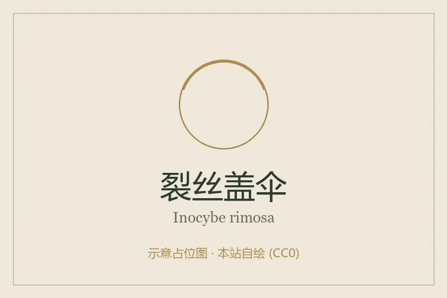

真菌 · 真菌界
裂丝盖伞 Inocybe rimosa

丝盖伞科蘑菇，菌盖黄褐、老后放射状开裂，含高浓度毒蕈碱，属剧毒菌，误食可致呼吸衰竭甚至死亡。
- 分类
- 门担子菌门纲伞菌纲目伞菌目科丝盖伞科属丝盖伞属
- 栖息环境
- 阔叶林与混交林地上，夏秋成群发生
- 地理分布
- 北半球温带广布，中国南北各地及欧洲、北美常见
- 保护级别
- 暂无评估；种群稳定
物种志
裂丝盖伞的子实体小型至中型，菌盖直径 2–6 厘米，初期圆锥形，后平展，中央有明显凸起，表面黄褐、金黄褐至棕褐色，具放射状纤维丝，老后从边缘向中央放射状开裂。菌肉白色，薄，气味刺鼻带精液或霉味。菌褶白色后变灰褐，离生，较密。菌柄长 3–8 厘米，直径 0.4–1 厘米，白色至淡黄，表面有细粉，基部稍膨大。孢子印褐色。
裂丝盖伞生于阔叶林与针阔混交林地上，夏秋成群发生，是常见的林地蘑菇。它含有高浓度毒蕈碱，属剧毒菌：误食后 15–30 分钟出现流涎、出汗、流泪、瞳孔缩小、视力模糊、腹痛腹泻，严重时支气管痉挛、呼吸衰竭，可致死。因其外形与某些可食的丝膜菌、口蘑相似，是蘑菇中毒的常见原因。丝盖伞属种类繁多且鉴定困难，应一律不采食。
形态与习性
- 菌盖直径 2–6 厘米，黄褐色，老后放射状开裂
- 菌褶白色后变灰褐，离生，较密
- 菌柄长 3–8 厘米，白色至淡黄，基部稍膨大
- 孢子印褐色，孢子具小瘤
- 毒性含高浓度毒蕈碱，属剧毒菌，禁止采食
- 中毒表现流涎出汗、瞳孔缩小、呼吸衰竭
趣味知识
- 裂丝盖伞含高浓度毒蕈碱，是已知毒蕈碱含量最高的蘑菇之一。
- 它菌盖老后像被撕开的布一样放射状开裂，“裂丝”之名由此而来。
- 中毒症状来得极快，15–30 分钟即出现流涎、出汗、瞳孔缩小，需立即送医。
- 丝盖伞属种类多、长相接近，采菌界的原则是“丝盖伞一律不碰”。